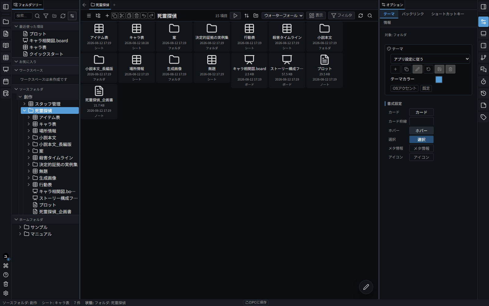

文書・表・マインドマップを作成
ノート、表、マインドマップ、スケジュールを作成できます。Webページ、資料画像、Meldex内のチャット履歴なども、関連する制作資料として管理できます。
制作に関する情報を、つなげて管理。
Meldexは、マンガ・小説・ゲームなどの制作情報を管理するアプリです。 文書、表、マインドマップ、資料画像、Webページ、Meldex内のチャット履歴などを自動リンクでつなぎ、自動タグ付け、文章による画像検索、作品の情報を踏まえたAIとの相談などに利用できます。

ノート、表、マインドマップ、スケジュールを作成できます。Webページ、資料画像、Meldex内のチャット履歴なども、関連する制作資料として管理できます。
人物名や用語を文書に書くと、関連する表や資料へのリンクが自動で作られます。作品内の設定や資料を、wikiのようにたどって確認できます。
チャット、スケジュール、ToDo、勤怠管理などを備え、制作チームの連絡、予定、作業状況の管理や、資料の共有に使えます。
様々な形で、設定資料を作成したり、企画や構成を練ることができます。人物・用語・進行状況などは表で整理でき、アイデアや構成はカードを線でつないだマインドマップやハコ書きとして組み立てられます。
WebページやXのブックマークを取り込み、Webページ内の画像を一括保存できます。PC内の既存フォルダも、Meldexから参照する資料の保存場所として登録できます。
自動リンク、全文検索、自動タグ付け、文章による画像検索、重複画像検出を使って、必要な情報を探して整理できます。
保存している資料や設定をAIが参照し、相談への回答や、文書・表・マインドマップの作成・編集に利用できます。
Windows PCにダウンロードして使います。データは自分で選んだPCのフォルダへ保存されます。
ブラウザで開いて使います。iPad、スマホ、Mac、Windowsに対応し、アカウント登録は不要です。
Windows PCで、PC内のファイルを直接扱いたい場合はデスクトップ版を利用できます。外部AIツールなど、PC上のほかのソフトとも連携できます。
Meldex Cloudはブラウザですぐに使えます。アカウント登録は不要で、データは初期状態ではこの端末内に保存されます。別の端末と共有するときだけDropboxへ接続します。
ブラウザでそのまま使う方法と、Meldexを端末へ保存してオフラインでも使う方法を選べます。設定は後から変更できます。
スマホやiPadでは、Meldexをホーム画面に追加できます。追加後はホーム画面のアイコンをタップするだけで、通常のアプリと同じように開けます。
Dropboxへ切り替えても、端末内のデータが自動で移動・削除されることはありません。
ノート、シナリオ、ボード、シート、タイマー、クイックメモは、それぞれ単独でも利用できます。Windowsでは必要なアプリだけをダウンロードでき、スマホやiPadでは各ツールをホーム画面へ追加できます。
利用形態によって、使える端末と一部の機能が異なります。
| 環境 | デスクトップ版 | クラウド版 |
|---|---|---|
| Windows PC | 対応。Windows用ZIPを利用できます。 | 対応。Chrome / Edge などのブラウザで使えます。 |
| Mac / Linux / Chromebook | 未提供。 | 対応。最新のブラウザで使えます。 |
| iPad / タブレット | 未提供。 | 対応。最新のブラウザで使えます。 |
| iPhone / Androidスマホ | 未提供。 | 対応。スマホ向けの画面で使えます。 |
利用規約 と プライバシーポリシー を確認してください。
Meldexは個人開発のソフトウェアです。個別の質問対応、導入支援、利用環境ごとの不具合調査などのサポートは提供していません。不具合や要望は送信できますが、返信や対応を保証するものではありません。
この配布ページとマニュアルは、LLMを利用して作成・更新しています。開発者がすべてのページと記述を個別に確認できていない場合があります。重要な操作や費用・外部サービス設定は、実際の画面や公式情報と照合してください。
Meldexは、将来オープンソースソフトウェアとして公開する予定です。公開後は、適用されるライセンスに従って修正・利用・再配布できます。開発者による更新は不定期に行われ、更新時期や継続は保証されません。
デスクトップ版で送信先が設定済みの場合、Meldex内から報告できます。通信に失敗した報告は端末内の送信待ちに保存され、次回起動時に再送されます。送信先が未設定の場合とクラウド版では、端末内への記録のみです。